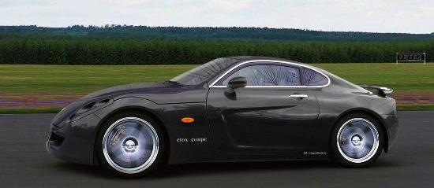
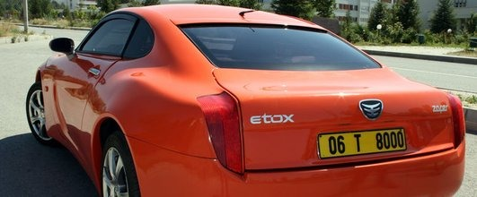
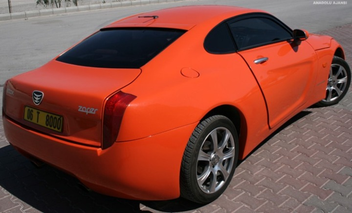

|
''Ýlgi bizi sevindiriyor''
Dünya otomotiv sektörü için olmasa bile Türkiye için bir marka yaratmanýn zamanýnýn çoktan geldiðine inandýklarýný ifade eden Malkoç, ''Markayý firmalar yaratmaz, o markayý kullanan insanlar yaratýr ve sahiplenir. Etox'a sokakta ve internet ortamýnda vatandaþlarýmýzýn gösterdiði büyük ilgi bu konuda bizi oldukça sevindirdi'' dedi. Etox'un, piyasadaki spor otomobiller arasýnda ''en düþük yakýt tüketimine sahip araç olacaðýný'' saivunan Malkoç, standart modelin þehir içinde 5.7, þehirler arasýnda ise 4.1 litre yakýt tüketimine sahip olduðunu söyledi.
Malkoç, en düþük Ferrari modelinin fiyatý 400 bin avrodan baþlarken, Etox'un bunun 5'te biri oranýnda 100-150 bin YTL fiyat aralýðýnda satýþa sunulacaðýný kaydetti.

''Tanýtýmý zafer bayramý'nda yapýlacak''
Etox'un geliþtirilmesini ''Türk otomotiv sanayinin bir zaferi'' olarak gördüklerini anlatan Malkoç, bu nedenle aracýn tanýtýmýný da 30 Aðustos Zafer Bayramý'nda yapacaklarýný söyledi. Yol testlerinin tamamlanmasýnýn ardýndan hemen seri üretime geçmek istediklerini bildiren Malkoç, Etox'un üç ayrý motor seçeneði ile satýþa sunulacaðýný dile getirdi.
Ýlk etapta yýlda 20 araç yapmayý hedeflediklerini, ilerleyen yýllarda de bu rakamý 500'e kadar çýkarmak istediklerini ifade eden Malkoç, araçlarýnýn her birinin kiþinin istediði üzere ayrý ayrý özelliklere sahip olacaðýný kaydetti.
Malkoç, daha þimdiden Güney Kore'den bir firmanýn projeye ortak olmak istediðini belirterek, ''Ancak yerli bir firmayla ortak olmayý tercih ederiz'' dedi. Gerek çizgileri, gerek kullaným özellikleri ve gerek motor çeþitliliðiyle anlatan Etox'un, 125 beygir (hp) gücünde 1500 cc hacminde dizel motor kullanýlan standart modelinin yaný sýra 220 hp güç üretebilen 3000 cc dizel ve daha fazla performans isteyenler için de 272 hp güç üretebilen özel bir V6 benzinli motor seçenekleri bulunuyor.
Lamborghini de böyle baþlamýþtý
Ünlü spor otomobil Lamborghini de benzer bir hikayeyle üretilmeye baþlanmýþtý. Ýkinci Dünya Savaþý'nýn öncesi ve sonrasýnda önemli bir traktör üreticisi olan Ferruccio Lamborghini'nin bir Ferrari otomobili vardý.
Ferrari'nin debriyaj aksamýnýn kendi traktörleriyle ayný olduðunu fark eden Lamborghini, Enzo Ferrari ile görüþtü ve onu bu konuda eleþtirdi. Fakat Enzo Ferrari Lamborghini'yi basit bir traktör üreticisi olarak görerek onu dinleme gereði duymadý. Bunun üzerine Lamborghini, Ferrari'ye rakip kendi spor arabalarýný üreterek, Enzo Ferrari'den intikam almaya yemin etti. Daha sonra Ferrari'yi eleþtirdiði her konuda Ferrari'den çok daha üstün olan Lamborghini 350 GT'yi yaptý.

Türkiye'nin ilk otomobilini (Devrim) 1965 yýlýnda yaptýðýný hatýrlatan Malkoç, þunlarý kaydetti:
''Korelilerin o zaman bir otomobili yoktu. Ýlk 1970 yýlýnda otomobil ürettiler. Þu anda milli gelirlerinin yüzde 80'ini otomotiv sektörü oluþturuyor. Bütün dünyaya araba ihraç ediyorlar. Adamlar araba sattýktan sonra en az bir araba fiyatý kadar da yedek parça satýyorlar. Bizi yýllarca bastýrmýþlar 'sen yapamazsýn, sen edemezsin' diye. Elalem uzaya çýkýyor, biz hala otomobil üretmeyi tartýþýyoruz. Biz Osmanlý'nýn torunlarý, Atatürk'ün çocuklarýyýz. Bu ülke için bir þeyler yapmamýz gerekiyordu. Etox'u geliþtirip, ürettik. Bu benim hayalimdi ve gerçekleþtirdik. Bunun Türkiye'de herkese örnek olmasý gerekiyor. Türkiye'de yapýlamayacak hiç bir þey yok, istenirse her þeyi baþarabileceðimizi gösterdik. Biz öncü olduk. Ýnanýyorum ki, bizim ardýmýzdan en az 8-10 firma daha yakýn zamanda benzer çalýþmalar yapacak ve bir çok insanýmýz bu iþten ekmek yiyecek. Bugüne kadar tekerler hep ABD, Almanya, Ýtalya, Japonya gibi ülkeler için dönüyordu. Ýnþallah bundan sonra Türkiye için dönecek.''
Etox'un test aþamasýnda eski Ankara Sanayi Odasý Baþkaný olan Zafer Çaðlayan'ýn çok destek olduðunu anlatan Malkoç, Çaðlayan'a verdiði destekten dolayý teþekkür etti.
Gelen tepkiler çok olumlu
Etox'la ilgili haberlerin basýnda yer almasýndan sonra çok yoðun ve olumlu tepkiler aldýklarýný dile getiren Malkoç, þöyle devam etti:
''Toplumun her kesiminden çok olumlu tepkiler aldýk. Gelen tepkiler bizi çok sevindirdi. Açýkçasý biz bu kadar pozitif tepki beklemiyorduk. Geçenlerde Devlet Bakanýmýz Kürþat Tüzmen'le Ýstanbul'da bir fuarda karþýlaþtýk. Sayýn Tüzmen çok önemli bir iþ baþardýðýmýzý belirterek, takdirlerini iletti. Hükümet olarak ellerinden gelen desteði vereceklerini söyledi. Bir baþka bakanýmýz da Bakanlar Kurulu'nda Etox'un sözünün edildiðini ve bütün bakanlarýn çok olumlu tepkiler verdiðini anlattý. Tek rahatsýzlýðýmýz, Etox'un bazý basýn organlarýnda 'yerli Ferrari' olarak tanýtýlmasý oldu. Bu tamamen Türk mühendislerinin tasarladýðý ve Türk iþçilerini yaptýðý bize has bir araç. Bu nedenle hiç bir baþka arabanýn ismiyle anýlmasýný istemiyoruz.''

|